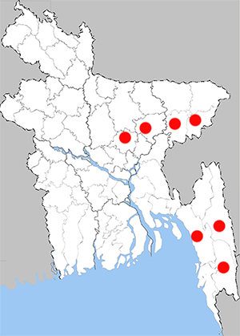

Zemeros flegyas flegyas
Punchinello

Recorded Place:
Moulvibazar, Rangamati, Chattogram, Gazipur, Habiganj

Literature Records:
Ahmad, M., Kabir, S.M.H., Ahmed, A.T.A., Rahman, A.K.A., Ahmed, Z.U., Begum, Z.N.T. and Khondker, M. (eds.) 2009. Encyclopedia of Flora and Fauna of Bangladesh, Vol. 21(III). Asiatic Society of Bangladesh, Dhaka. 464 pp.
Chowdhury, S.H. & M. Hossain, 2025; PP: 365;. Butterflies of Bangladesh-A Pictorial Handbook (Revised and enlarged version II). Dhaka, Bangladesh, 260pp.